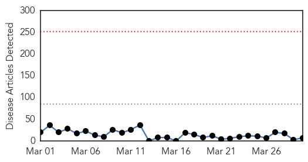
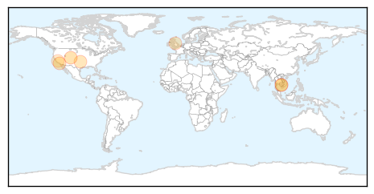
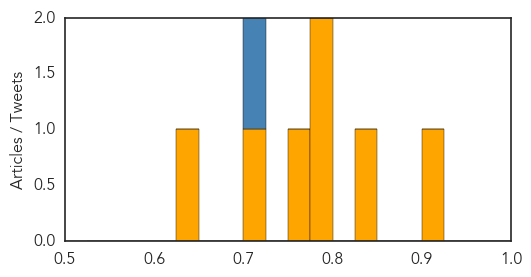
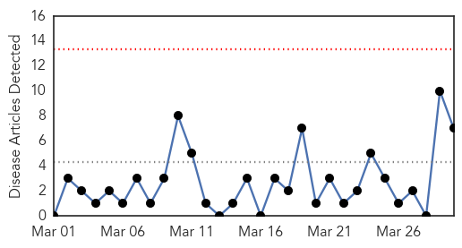

Measles
30-Day Web Trend
0 alerts, 0 warnings

30-Day Twitter Trend
1 alerts, 0 warnings

Article Locations
Article Confidences
Top Articles:
- 0.911
- Vail Daily health feature: Measles outbreak raises concern, awareness
- 0.841
- Dana Hills High School
- 0.796
- Cambodia 'measles free', WHO reports
- 0.784
- Oklahoma City-County Health Department offers MMR vaccines
- 0.761
- Cambodia ‘measles free’, WHO reports, National, Phnom Penh Post
- 0.703
- Theme Week: Infectious Disease, Contagion and the History of Vaccines
- 0.649
- The Disneyland Measles Outbreak is (Still) Over
Top Tweets:
- 0.724
- Broad measles vaccination coverage & rapid public health response are critical for preventing and controlling measles cases and outbreaks.
Meningitis
30-Day Web Trend
0 alerts, 0 warnings

30-Day Twitter Trend
2 alerts, 0 warnings

Article Locations

Article Confidences

Top Articles:
- 0.904
- UK first to give all babies free meningitis B vaccine
- 0.885
- UK to pioneer national meningitis B vaccination scheme
- 0.843
- Deal means meningitis B vaccine set to be in use by September
- 0.756
- Parents and charities delighted as meningitis B vaccine set to be introduced
- 0.721
- Meningitis B vaccine rolled out
- 0.644
- Government will consider lifesaving meningitis jab for children – but only if the price is right
- 0.574
- Call for introduction of Meningitis B vaccine
Top Tweets:
-
No tweets found for Mar 30, 2015